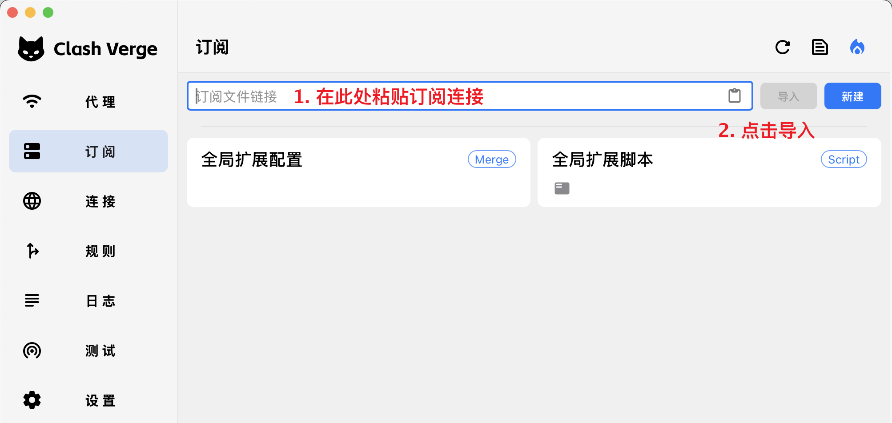
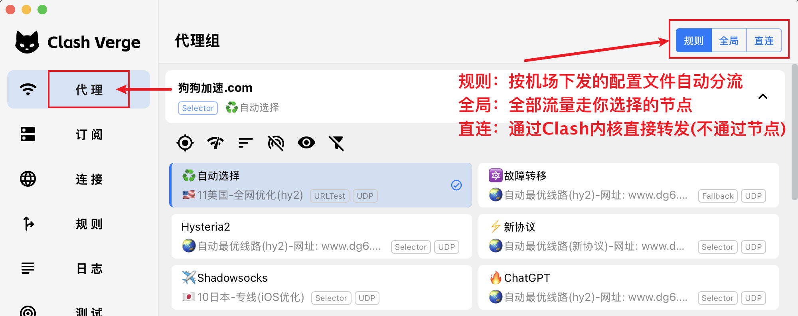
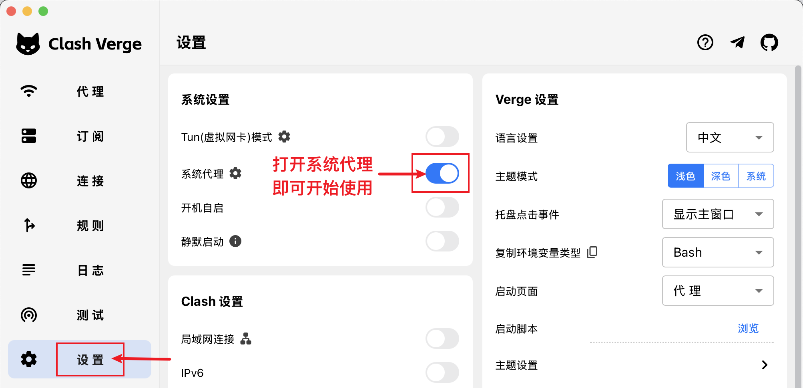

装好 Clash，导入订阅后还是打不开网页，问题常常出在配置没有启用、策略组选错，或应用流量没有进入客户端。这篇 2026 Clash 配置教程以桌面端 Clash Verge Rev 为例，从安装、导入到验证逐步说明。先完成一条能够正常访问的连接，再调整分流和进阶功能，排查起来会清楚很多。
本文面向 Windows、macOS 桌面用户，操作名称以实际安装版本为准。三张配图来自 Clash Verge Rev 官方文档，是文档中的演示界面，并非本站对某个 2026 版本的实测截图；图内服务商名称仅为原图示例。
一、先分清客户端、内核和订阅
日常所说的 Clash，可能指代理内核，也可能指带界面的客户端。本文使用的 Clash Verge Rev 是独立维护的图形客户端，内置 mihomo 内核，负责展示配置、管理连接和切换节点。不同客户端的菜单位置、兼容协议和更新方式并不完全相同，不能只看名字里有没有 Clash 就认定它们是同一个软件。项目关系与功能以项目仓库说明为准。
客户端本身不等于网络服务。你还需要自己管理的服务器配置，或服务商提供的有效订阅。订阅是一份可更新的配置来源，里面可能包含节点、策略组和规则；节点负责连接出口，策略组负责选择节点，规则负责决定请求交给哪个组。理解这三层，后面就不会把“已经导入”误认为“已经连接”。
搜索下载地址时，优先从项目仓库进入文档和 Releases。本文采用的文档域名为 www.clashverge.dev，可从仓库核对；仅凭网页标题写着“Clash 官网”，不足以判断来源。
二、安装前准备与版本选择
准备好三样东西：与你的系统兼容的安装包、一条有效订阅，以及能够正常联网的基础网络。先关闭其他正在接管代理的客户端，避免多个软件同时修改系统代理。记下已有的工作网络设置，后续遇到异常时方便恢复。
在项目发布页选择适合日常使用的正式版本，并按系统与处理器架构下载。Windows 应先查看系统类型；Mac 应区分 Intel 与 Apple 芯片。不要把源代码压缩包当成安装程序，也不要仅因为文件名数字更大就选择测试构建。具体系统要求参见官方安装说明。
安装后先确认主界面能够打开。Windows 若只有托盘图标、窗口无法显示，可根据官方说明检查 WebView2 运行环境。首次设置不必同时打开开机自启、局域网共享与 TUN；保留较少变量，更容易判断是哪一步发生问题。
三、导入订阅，并确认配置已启用
进入服务商后台，复制适用于 Clash 或 mihomo 的订阅地址，而不是浏览器地址栏里的用户中心链接。链接通常带有令牌，作用接近访问凭证。复制时避免混入换行和空格，也不要将完整地址发到公开评论区、截图或陌生在线转换站。
- 打开客户端的“订阅”页面，将地址粘贴到订阅输入框，点击“导入”。
- 等待配置下载和解析结束；若出现错误，先记录提示，不要连续重复点击。
- 在生成的配置卡片中选中要使用的订阅，确认启用状态。
- 进入“代理”页面，检查是否出现对应的策略组和节点名称。

也可以导入已有的本地 YAML 文件。它适合离线保存的配置，但普通本地配置不会凭空获得远程更新能力。官网的一键导入依赖系统正确关联客户端，按钮没有反应时，可以改用复制链接的方式。相关入口见官方订阅导入文档。
四、选择节点，理解三种代理模式
进入代理页面后，先展开主要策略组，选择一个有效节点。某些配置会把视频、聊天和其他业务分成不同组，所以更换主组不一定改变全部应用的出口。遇到特定网站异常时，应查看它实际匹配的组，而不是只盯着最上方的节点名称。
| 模式 | 处理方式 | 使用建议 |
|---|---|---|
| Rule／规则 | 依照配置规则选择直连、代理或拒绝 | 日常使用，先核对规则是否符合需求 |
| Global／全局 | 交由全局策略处理 | 短时对比排障，并检查全局组选项 |
| Direct／直连 | 由内核直接连接目标 | 用于对比直连表现，不等于退出客户端 |
规则模式不会天然保证“国内直连、国外代理”，结果取决于实际规则；全局模式也不意味着电脑里每个程序都已被接管。选择模式与接管流量是两个步骤，相关定义参见 mihomo 全局配置。

延迟测试适合快速筛掉明显不可达的节点，但数值低不等于下载快，更不保证目标网站可用。选定节点后，用自己真正需要的网站或应用验证；不要为了追逐几毫秒差异频繁切换出口。
第一次验收时，可以先固定选择一个节点，完成测试后再尝试自动选择。这样出现问题时，你知道请求经过了哪个出口，也方便前后比较。若一个策略组里面仍然是其他策略组，应继续展开确认最终选择；组名看起来正确，并不代表内部一定指向可用节点。
五、先开启系统代理，再判断是否需要 TUN
如果主要使用浏览器，先打开客户端中的“系统代理”，再刷新测试页面。这个开关会调整操作系统的代理设置，让遵循系统代理的程序把请求交给客户端；具有独立代理设置的程序，仍需检查自己的设置。

浏览器正常、某个应用仍无法连接时，再考虑 TUN。它通过虚拟网络接口和相关路由接管流量，适用于一些不遵循系统代理的程序。开启前确认客户端提示的服务与权限要求已经满足，开启后观察连接记录是否出现目标应用的请求。
TUN 与规则模式可以同时使用：前者影响流量怎样进入内核，后者决定进入后走哪条路径。它不保证所有环境下接管全部流量，具体还受路由、排除项和其他网络软件影响。若与工作 VPN 或虚拟机网络冲突，先关闭 TUN 做对比，再参考 mihomo TUN 文档检查对应选项。
六、配置成功后，做一次完整验收
建议分别打开一个预期直连的网站和一个预期经过代理的目标，再到“连接”或“日志”页面查看域名、匹配规则、策略组与节点。页面能够打开，只能说明访问成功；连接记录才能帮助你判断它是否按预期分流。
接着运行一次真实任务，例如连续浏览资料、播放一段视频或下载一个小文件。留意是否频繁重连、突然停顿，而不是只看测速按钮。若需要核对出口，查询结果只代表那一次请求所走的路径，不代表全部程序共享同一出口。
最后关闭代理并正常退出，确认原有网络能够恢复。通过“启用后可用、分流符合预期、退出后可恢复”这三项，再开启开机自启会更稳妥。保留一份能够工作的设置记录，以后更新出问题时便于对照。
排查时可以用简单文字记下测试时间、网络环境、节点名称和现象。例如，同一台电脑在家庭宽带下失败，换手机热点后恢复，说明值得继续检查本地接入环境；同一网络下只有一个节点失败，则可优先检查该节点。每次只改变一个条件，比同时重装软件、换订阅和改规则更容易找出原因。
七、更新订阅与自定义规则怎么做
服务商调整节点后，可在订阅页面更新对应配置，并检查更新提示和节点列表。更新失败时先保留现有可用配置，不要立即删除。若订阅地址已经重置，则应换成新链接，旧地址不会因为多点几次刷新就恢复有效。
需要让个别域名固定直连或走指定策略组时，先确认组名存在，再添加自定义规则。规则有匹配顺序，过于宽泛的条目放在前面，可能提前接走后面的请求。每次只改一条，并用连接记录验证命中结果。规则类型和顺序见 mihomo 路由规则文档。
直接修改远程订阅原文件，可能在更新时被覆盖。长期自定义内容应优先使用客户端支持的扩展配置或脚本，并先备份。合并规则、覆盖数组和脚本执行都有各自语义，不要直接粘贴一整份陌生模板；参照官方扩展配置说明操作，修改后确认内核能够正常加载。
备份除了配置文件，还应记录客户端版本、自己添加的规则，以及常用策略组的选择。备份中可能含有服务器地址和密码，应放在自己能够控制的位置。换电脑时，先验证新环境能否加载和连接，再逐步迁移个性化设置；不要在尚未验收时就删除旧设备上的可用配置。
八、常见故障按顺序排查
订阅导入失败，或提示配置解析错误
先检查链接是否完整、账户是否有效、订阅格式是否兼容。若返回的是登录页或错误页，内容就不是可用的 YAML。出现证书错误时，核对系统时间和订阅域名，并联系提供方排查，不要把忽略证书校验作为日常解决方式。
有节点却无法访问，或只有部分网站异常
依次确认配置已启用、当前模式正确、策略组有有效选择，以及系统代理或 TUN 确实生效。如果日志里根本没有目标连接，优先检查应用代理设置；如果请求已经进入内核，再检查命中的规则和节点。全局可用而规则模式失败时，可优先对比分流结果。
日志提示域名解析失败
先确认本地网络能正常联网，再查看是否改过 DNS 配置、是否存在浏览器独立解析或其他网络工具干预。DNS 解析、节点连接和网站响应属于不同环节，不应见到超时就随意更换所有 DNS 地址。保留原设置，结合 mihomo DNS 文档逐项排查。
退出客户端后，电脑反而无法上网
这可能是系统代理残留，仍指向已经停止的本地端口。在 Windows 的“设置 → 网络和 Internet → 代理”中检查手动代理，关闭由客户端留下的设置；工作单位要求的代理应按原记录恢复。相关现象可查官方 Windows 常见问题。求助时提供系统、版本、报错与复现步骤，并隐藏订阅令牌和节点密码。
日常维护不需要不断堆叠配置。把有效订阅、正确策略、流量接管和连接验证四个环节逐一做好，就能形成一套容易理解、也方便恢复的 Clash 使用流程。
本文于 2026-09-30 核对项目仓库、Clash Verge Rev 官方使用文档与 mihomo 配置文档，相关链接已随正文标注。配图保留官方文档原貌，图片权利归原权利人所有；客户端持续更新，操作时请结合当前版本文档。
延伸阅读：客户端工具箱 · 知识问答库 · 专线、中转与直连的区别